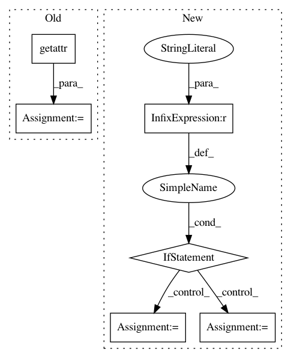

2bd4c84340a3c35b011026657a9ed30e380d0d75,tools/test.py,,main,#,62
Before Change
else:
model_args = cfg.model.copy()
model_args.update(train_cfg=None, test_cfg=cfg.test_cfg)
model_type = getattr(detectors, model_args.pop("type"))
outputs = parallel_test(
model_type,
model_args,
args.checkpoint,
dataset,
_data_func,
range(args.gpus),
workers_per_gpu=args.proc_per_gpu)
if args.out:
print("writing results to {}".format(args.out))
mmcv.dump(outputs, args.out)
After Change
cfg.data.test.test_mode = True
// init distributed env first, since logger depends on the dist info.
if args.launcher == "none":
distributed = False
else:
distributed = True
init_dist(args.launcher, **cfg.dist_params)
// build the dataloader
// TODO: support multiple images per gpu (only minor changes are needed)
dataset = get_dataset(cfg.data.test)
data_loader = build_dataloader(dataset,
imgs_per_gpu=1,
workers_per_gpu=cfg.data.workers_per_gpu,
In pattern: SUPERPATTERN
Frequency: 5
Non-data size: 6
Instances
Project Name: open-mmlab/mmdetection
Commit Name: 2bd4c84340a3c35b011026657a9ed30e380d0d75
Time: 2019-05-10
Author: chenkaidev@gmail.com
File Name: tools/test.py
Class Name:
Method Name: main
Project Name: scikit-learn-contrib/categorical-encoding
Commit Name: 3c2d6375c2722bf405d436d45456eb4401d15540
Time: 2019-06-14
Author: slliu96@163.com
File Name: examples/benchmarking_cpu/benchmarking_cpu.py
Class Name:
Method Name:
Project Name: dask/dask-ml
Commit Name: 4e5e78b374efe084a68ee163ca20eb76b3f94078
Time: 2019-03-03
Author: jrbourbeau@users.noreply.github.com
File Name: dask_ml/preprocessing/data.py
Class Name: QuantileTransformer
Method Name: _transform_col
Project Name: matthewwithanm/django-imagekit
Commit Name: 68b8d46a2fef57d6ebed1af2f2457ec4b0244ca4
Time: 2009-07-19
Author: justin@driscolldev.com
File Name: imagekit/processors.py
Class Name: Transpose
Method Name: process
Project Name: has2k1/plotnine
Commit Name: f2435e3ac209629cfd89ddbd94826f8cf0db9aa5
Time: 2020-06-01
Author: has2k1@gmail.com
File Name: plotnine/geoms/annotation_stripes.py
Class Name: _geom_stripes
Method Name: draw_group